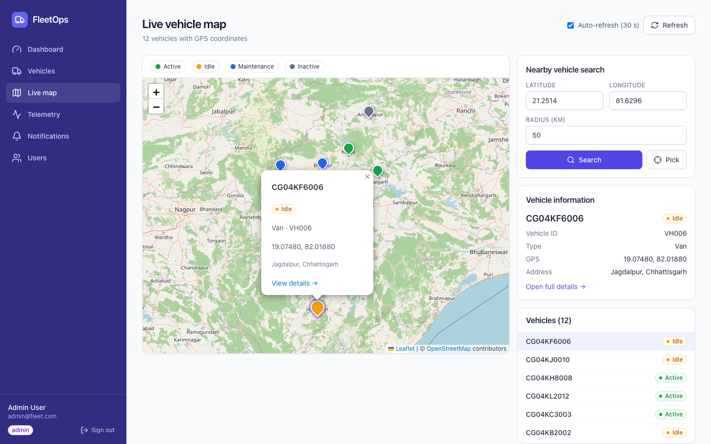
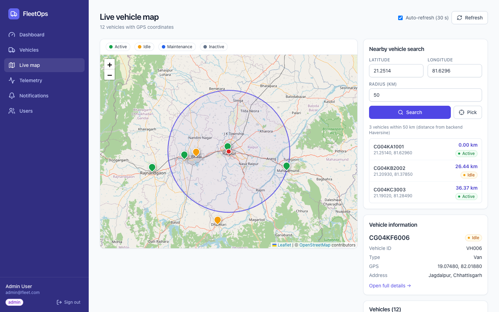
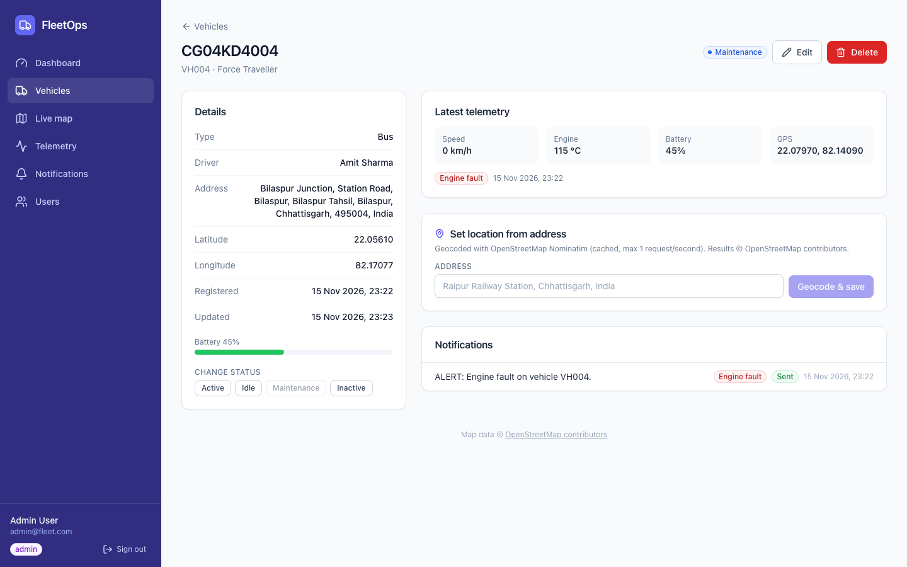
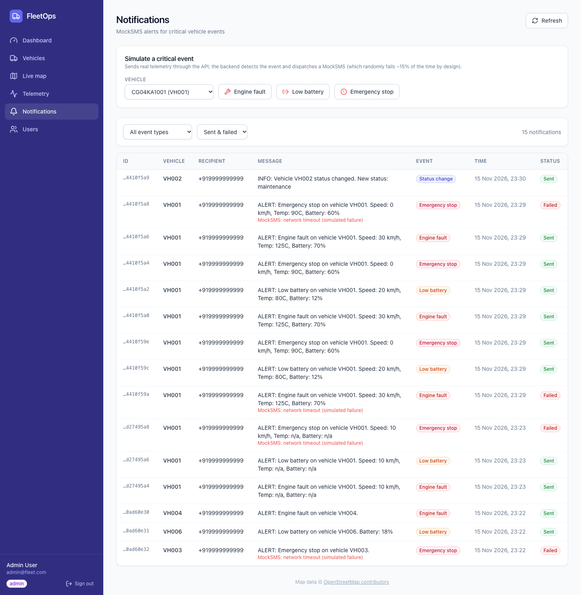
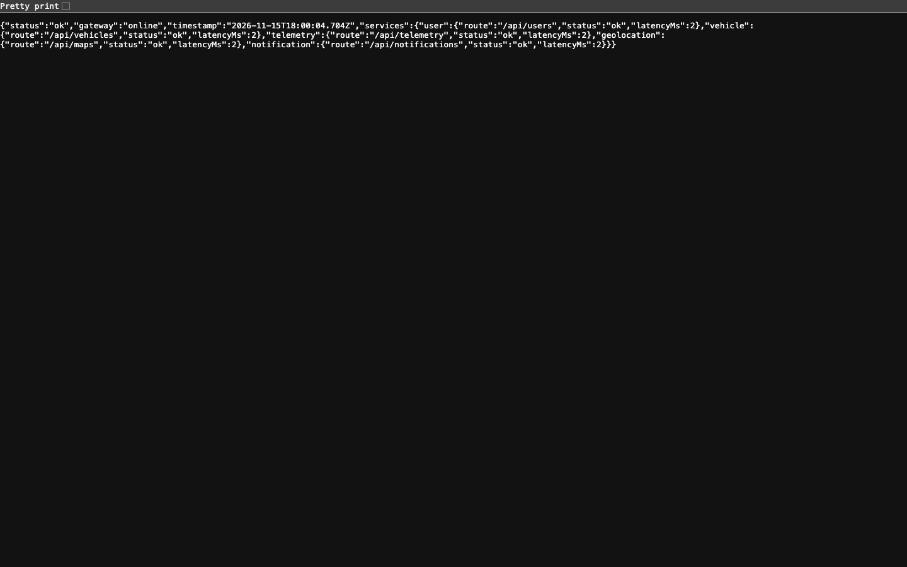
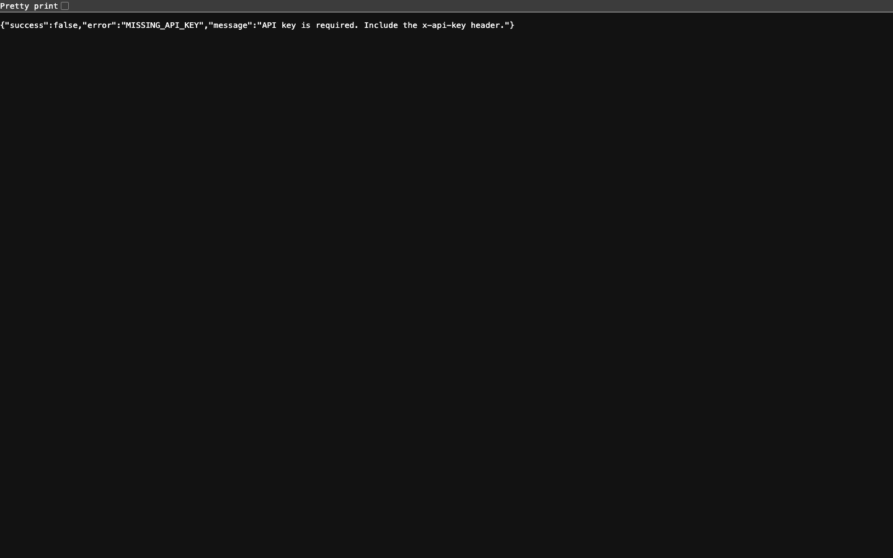
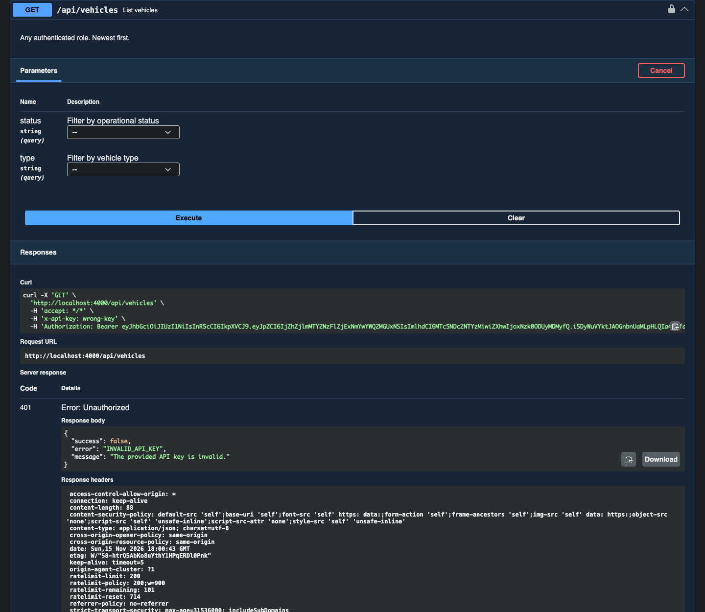
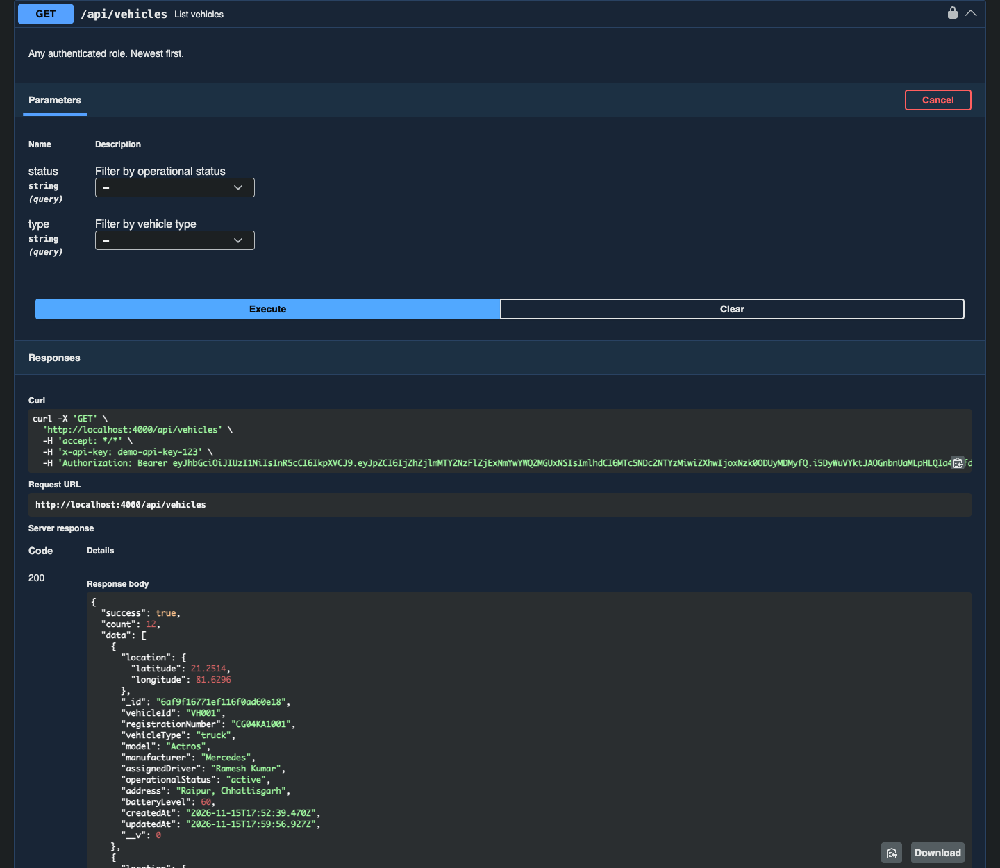
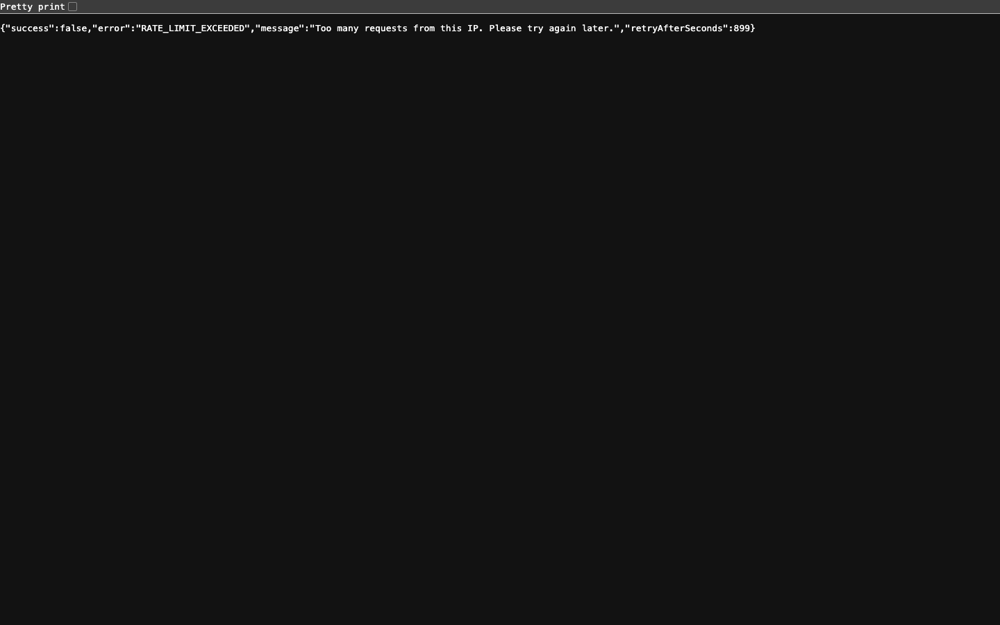
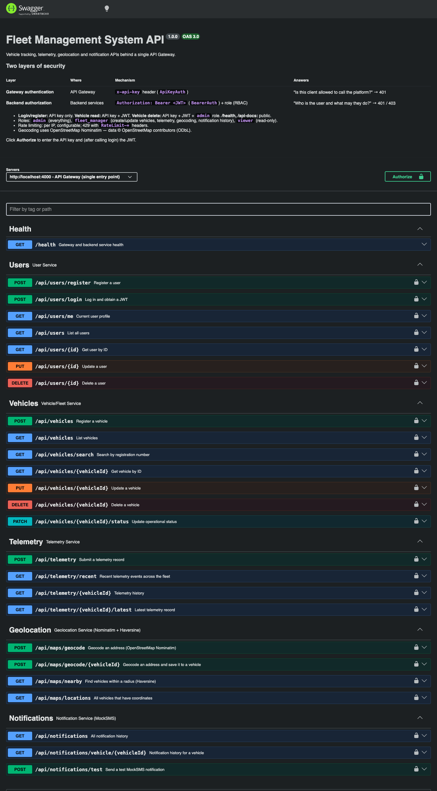

| Student name | [ Enter your name ] |
|---|---|
| Student ID | [ Enter your ID ] |
| Course / Programme | [ Enter course ] |
| Date | 15 November 2026 |
| Technology | Node.js · Express · MongoDB Atlas · React · Leaflet · Swagger · Mocha/Chai |
| Deployed link | None – the application runs locally (not deployed) |
A fleet administrator needs to monitor vehicle locations, identify nearby vehicles, receive SMS notifications for important vehicle events and give developers clear API documentation. This project implements a Fleet Management System with a Node.js/Express/MongoDB backend, an Express-based API Gateway, a React dashboard, Swagger/OpenAPI documentation and an automated test suite.
Objectives: (1) integrate an external geolocation service for geocoding, GPS storage, radius search and map display; (2) integrate a mock SMS service with a sent/failed record; (3) simulate an API gateway with routing, API-key verification, rate limiting and error handling; (4) document all major endpoints with Swagger/OpenAPI; (5) verify seven critical flows with automated Mocha/Chai tests.
| Requirement | Implementation | Evidence |
|---|---|---|
| Coordinates from vehicle addresses | OpenStreetMap Nominatim via POST /api/maps/geocode and /geocode/:vehicleId; cached, ≤1 req/s, error handling | Fig. 3; test group 8 |
| Store GPS coordinates from vehicles | POST /api/telemetry stores the reading and updates the vehicle location | Test group 3 |
| Vehicles within X km of a location | GET /api/maps/nearby – Haversine great-circle distance | Fig. 2; test group 6 |
| Map-based display | Leaflet + OpenStreetMap tiles; colour-coded markers, popups, nearby results and radius circle | Figs. 1–2 |
| SMS on critical events | MockSMS provider; ENGINE_FAULT, LOW_BATTERY, EMERGENCY_STOP | Fig. 4; test group 4 |
| Notify on status change | PATCH /api/vehicles/:id/status sends a STATUS_CHANGE message | Fig. 4; test group 4 |
| Record sent/failed status | notifications collection: status, failureReason | Fig. 4 |
| Express API Gateway with the five routes | gateway/ – http-proxy-middleware | Figs. 5–7; test group 7 |
| Rate limiting | express-rate-limit, per IP, configurable, 429 + standard headers | Fig. 7; test group 7 |
| API-key verification | x-api-key middleware (constant-time); 401 when missing/invalid | Figs. 5–6; test group 7 |
| Forward requests/responses; handle unavailable and invalid requests | Proxy pass-through; 503 service unavailable, 504 timeout, 400 malformed JSON | Test group 7 |
| Swagger/OpenAPI with models, auth, examples, errors | swagger-jsdoc + swagger-ui-express at /api-docs: 26 operations, 17 schemas, two security schemes | Section 6, Fig. 8 |
| Mocha/Chai tests (≥5 flows) | All 7 listed flows plus Nominatim geocoding: 43 tests | Section 8 |
| Screenshots | Real captures of the four required demonstrations | Section 9 |
| Layer | Technology |
|---|---|
| Frontend | React 18, Vite 5, Tailwind CSS 3, React Router 6, Axios, Leaflet 1.9 + React-Leaflet 4.2, Lucide |
| Gateway | Express 5, http-proxy-middleware, express-rate-limit, swagger-jsdoc, swagger-ui-express, helmet, cors |
| Backend | Node.js, Express 5, Mongoose, jsonwebtoken, bcryptjs, axios |
| Database | MongoDB Atlas |
| Integrations | OpenStreetMap Nominatim (geocoding) and tiles (map); custom MockSMS provider |
| Testing | Mocha, Chai 4, Supertest, Sinon |
The five services are separate route/service modules in one backend process (a modular monolith) sharing the Mongoose models and JWT middleware. Splitting them into five processes would only duplicate this code. The gateway nevertheless routes each prefix through its own configurable URL (USER_SERVICE_URL, VEHICLE_SERVICE_URL, …), so any service can be extracted later with no gateway change. The backend uses port 5001 because macOS AirPlay Receiver occupies port 5000.
| Collection | Key fields |
|---|---|
| users | name, email (unique), bcrypt password hash, phone, role (admin / fleet_manager / viewer) |
| vehicles | vehicleId, registrationNumber, vehicleType, model, manufacturer, assignedDriver, operationalStatus, address, location{latitude, longitude}, batteryLevel |
| telemetries | vehicleId, latitude, longitude, speed, engineTemperature, batteryLevel, eventType, timestamp |
| notifications | vehicleId, recipient, message, eventType, provider (MockSMS), status (sent/failed), failureReason, timestamp |
| geocodecaches | normalised address key, provider, coordinates, formatted address (30-day TTL) |
format=jsonv2&limit=1). Because Google Maps billing was unavailable, the provider is configurable (GEOCODING_PROVIDER=nominatim) and no Google key is used.Retry-After and pauses all upstream calls; timeouts and out-of-range coordinates are rejected; no bulk geocoding; OpenStreetMap attribution shown in responses and on the map.location is updated on every reading.a = sin²(Δφ/2) + cos φ₁ · cos φ₂ · sin²(Δλ/2) d = 2R · atan2(√a, √(1−a)), R = 6371 km
Vehicles with d ≤ radius are returned sorted by distance. The dashboard displays the server-computed distance and calculates none itself.
notificationService.js implements a custom SMS stub: it logs [MockSMS] TO … | MSG … and fails randomly about 15% of the time to exercise error handling. Every attempt is stored with status (sent/failed) and failureReason. Triggers: critical telemetry events (explicit, or detected automatically when engine temperature > 110 °C or battery < 20%) and vehicle operational-status changes. Delivery is fire-and-forget so API calls are not slowed.
| Gateway route | Target service |
|---|---|
/api/users/* | User Service |
/api/vehicles/* | Vehicle/Fleet Service |
/api/telemetry/* | Telemetry Service |
/api/maps/* | Geolocation Service |
/api/notifications/* | Notification Service |
Processing order for /api/*: rate limiter → API-key check → JSON parsing → proxy. /health, /api-docs and /api-docs.json are public.
| Situation | Status | Code |
|---|---|---|
| Missing / invalid API key | 401 | MISSING_API_KEY / INVALID_API_KEY |
Rate limit exceeded (headers RateLimit-*, Retry-After) | 429 | RATE_LIMIT_EXCEEDED |
| Malformed JSON | 400 | MALFORMED_JSON |
| Service unreachable / timeout | 503 / 504 | SERVICE_UNAVAILABLE / GATEWAY_TIMEOUT |
| Invalid/expired JWT, forbidden role | 401 / 403 | from backend (passed through) |
Two security layers. Gateway authentication (x-api-key) decides whether a client may use the platform; backend authorization (JWT + role) decides what a user may do. The key is compared in constant time, stripped before forwarding, and never logged or returned. Roles: admin (everything, incl. deleting vehicles and managing users), fleet_manager (register/edit vehicles, status, telemetry, geocoding, all notifications) and viewer (read-only).
Served at http://localhost:4000/api-docs (JSON at /api-docs.json), generated with swagger-jsdoc. It documents 26 operations with request/response models, example requests and responses, required roles, error responses and status codes, and two security schemes: ApiKeyAuth (header x-api-key) and BearerAuth (JWT). A complete written reference is in documentation/API_REFERENCE.md.
| Method | Path | Summary | Auth | Role |
|---|---|---|---|---|
| GET | /health | Gateway and backend service health | Public | – |
| POST | /api/users/register | Register a user | API key | – |
| POST | /api/users/login | Log in and obtain a JWT | API key | – |
| GET | /api/users/me | Current user profile | API key + JWT | any role |
| GET | /api/users | List all users | API key + JWT | admin |
| GET | /api/users/{id} | Get user by ID | API key + JWT | admin |
| PUT | /api/users/{id} | Update a user | API key + JWT | admin |
| DELETE | /api/users/{id} | Delete a user | API key + JWT | admin |
| POST | /api/vehicles | Register a vehicle | API key + JWT | admin, fleet_manager |
| GET | /api/vehicles | List vehicles | API key + JWT | any role |
| GET | /api/vehicles/search | Search by registration number | API key + JWT | any role |
| GET | /api/vehicles/{vehicleId} | Get vehicle by ID | API key + JWT | any role |
| PUT | /api/vehicles/{vehicleId} | Update a vehicle | API key + JWT | admin, fleet_manager |
| DELETE | /api/vehicles/{vehicleId} | Delete a vehicle | API key + JWT | admin only |
| PATCH | /api/vehicles/{vehicleId}/status | Update operational status | API key + JWT | admin, fleet_manager |
| POST | /api/telemetry | Submit a telemetry record | API key + JWT | admin, fleet_manager |
| GET | /api/telemetry/recent | Recent telemetry events across the fleet | API key + JWT | any role |
| GET | /api/telemetry/{vehicleId} | Telemetry history | API key + JWT | any role |
| GET | /api/telemetry/{vehicleId}/latest | Latest telemetry record | API key + JWT | any role |
| POST | /api/maps/geocode | Geocode an address (OpenStreetMap Nominatim) | API key + JWT | admin, fleet_manager |
| POST | /api/maps/geocode/{vehicleId} | Geocode an address and save it to a vehicle | API key + JWT | admin, fleet_manager |
| GET | /api/maps/nearby | Find vehicles within a radius (Haversine) | API key + JWT | any role |
| GET | /api/maps/locations | All vehicles that have coordinates | API key + JWT | any role |
| GET | /api/notifications | All notification history | API key + JWT | admin, fleet_manager |
| GET | /api/notifications/vehicle/{vehicleId} | Notification history for a vehicle | API key + JWT | any role |
| POST | /api/notifications/test | Send a test MockSMS notification | API key + JWT | admin |
A React single-page application provides: login with JWT handling and role-based pages; a dashboard (total/active/idle/maintenance vehicles, critical alerts, recent events, status distribution – all from live API data); vehicle management (list, register, edit, details, delete for admins, search by registration, filter by status); a live Leaflet map with a nearby-vehicle search; a telemetry page with a simulator; a notifications page with event/status filters and critical-event simulation; and an admin-only user-management page. All calls go through the API Gateway (the Vite proxy attaches the API key server-side so it is never present in browser code).
Mocha + Chai with Supertest (HTTP) and Sinon (mocks). Tests use a separate database that is emptied before each test and dropped afterwards (the suite refuses to run against the main database). Nominatim and the MockSMS randomness are stubbed, so no external service is called; there is no dependency on Google Maps and tests are independent of each other. Run with npm test.
Result: 43 passing, 0 failing (43 tests listed).
| Assignment flow | Test group |
|---|---|
| 1. Login and JWT verification | TEST 1 |
| 2. Vehicle registration and retrieval | TEST 2 |
| 3. Telemetry submission and storage | TEST 3 |
| 4. Status update and notification triggering | TEST 4 |
| 5. Role-based access control | TEST 5 |
| 6. Nearby search with mocked geolocation | TEST 6 |
| 7. Gateway API key and rate limiting | TEST 7 |
| Additional: Nominatim geocoding | TEST 8 |
All screenshots are real captures of the application running locally.










Beyond the automated tests, the following were exercised against the running stack (backend, gateway, frontend, MongoDB Atlas):
| Check | Result |
|---|---|
| Login with each role; invalid login rejected | Pass |
| Vehicle registration, retrieval, update, search, deletion (via the frontend proxy) | Pass |
| Telemetry submission; GPS stored; vehicle location updated | Pass |
| Real Nominatim geocoding (two addresses); repeat served from cache; invalid address → 404 | Pass |
| Nearby search (3 vehicles within 50 km; empty result elsewhere) | Pass |
| MockSMS: critical events and status change produced sent and failed records stored in MongoDB | Pass |
| Gateway: valid key routed; missing/invalid key 401; rate limit 429; health unaffected | Pass |
| Viewer denied admin-only actions (403); admin allowed | Pass |
| Swagger UI loads; OpenAPI routes match the real Express routes (checked programmatically) | Pass |
| Automated suite: 43 passing, 0 failing | Pass |
role field, so anyone holding the API key can create an admin – acceptable for a local demo, to be restricted before real use.localStorage; no refresh tokens or revocation. The gateway key is a shared secret, not per-user authentication.All required elements were implemented and verified: OpenStreetMap-based geocoding, GPS storage, Haversine nearby search and a map interface; a MockSMS integration recording sent/failed notifications for critical events and status changes; an Express API Gateway with routing, API-key verification, rate limiting and error handling; complete Swagger/OpenAPI documentation; and an automated Mocha/Chai suite covering all seven listed flows (43 tests passing). Remaining limitations are listed above.
npm run install:all # install backend + frontend dependencies cp .env.example .env # fill MONGODB_URI, JWT_SECRET, GATEWAY_API_KEY, NOMINATIM_USER_AGENT npm run seed # demo data (wipes the configured database) npm start # backend :5001 npm run gateway # gateway :4000 (Swagger UI /api-docs) npm run frontend # frontend :5173 npm test # automated tests
| Seeded account | Password | Role |
|---|---|---|
| admin@fleet.com | admin123 | admin |
| manager@fleet.com | manager123 | fleet_manager |
| viewer@fleet.com | viewer123 | viewer |
| Area | Lines of JavaScript/JSX |
|---|---|
Gateway (gateway/) | 751 |
Backend (src/) | 1,371 |
Tests (test/) | 693 |
Frontend (frontend/src/) | 1,450 |
README.md – full project documentationdocumentation/ – API reference, OpenAPI export, architecture, setup/testing, demo guidescreenshots/ – all screenshots and text evidence (MockSMS log, stored notifications, curl output, test output)